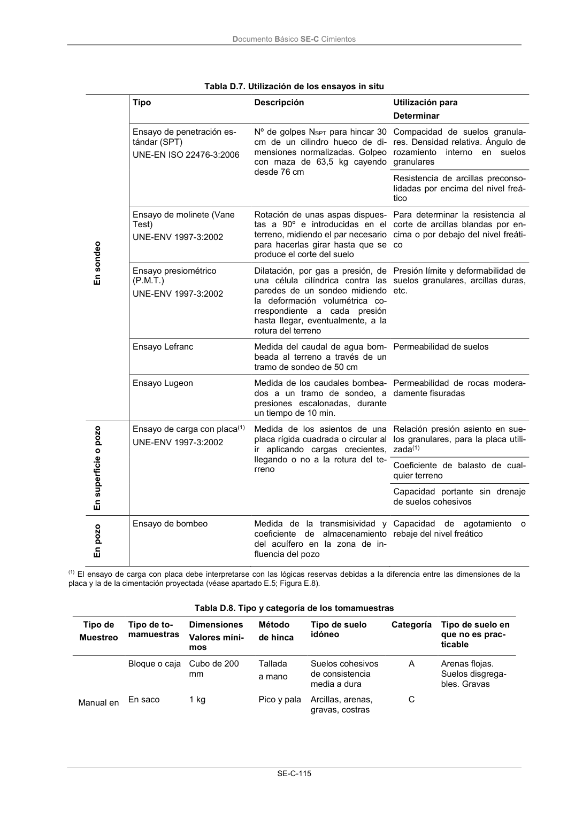

DB-SE-C Cimientos · edición 2019-12-20 · capa oficial
Documento DB-SE-C-oficial · SHA-256 del PDF a71133f4b0dca253e45ea3071c70f2a512354bcc5cd841bf89b1a502f567ac5e
Página física 120 de 165.
Copia fiel del PDF fuente · Fuente oficial
Ficha de la disposición en la fuente oficial
Formato: Texto de la página (Markdown)
Documento Básico SE-C Cimientos
SE-C-115
Tabla D.7. Utilización de los ensayos in situ
En sondeo
Tipo
Descripción
Utilización para
Determinar
Ensayo de penetración es-
tándar (SPT)
UNE-EN ISO 22476-3:2006
Nº de golpes NSPT para hincar 30
cm de un cilindro hueco de di-
mensiones normalizadas. Golpeo
con maza de 63,5 kg cayendo
desde 76 cm
Compacidad de suelos granula-
res. Densidad relativa. Ángulo de
rozamiento
interno
en suelos
granulares
Resistencia de arcillas preconso-
lidadas por encima del nivel freá-
tico
Ensayo de molinete (Vane
Test)
UNE-ENV 1997-3:2002
Rotación de unas aspas dispues-
tas a 90º e introducidas en el
terreno, midiendo el par necesario
para hacerlas girar hasta que se
produce el corte del suelo
Para determinar la resistencia al
corte de arcillas blandas por en-
cima o por debajo del nivel freáti-
co
Ensayo presiométrico
(P.M.T.)
UNE-ENV 1997-3:2002
Dilatación, por gas a presión, de
una célula cilíndrica contra las
paredes de un sondeo midiendo
la deformación volumétrica co-
rrespondiente a cada presión
hasta llegar, eventualmente, a la
rotura del terreno
Presión límite y deformabilidad de
suelos granulares, arcillas duras,
etc.
Ensayo Lefranc
Medida del caudal de agua bom-
beada al terreno a través de un
tramo de sondeo de 50 cm
Permeabilidad de suelos
Ensayo Lugeon
Medida de los caudales bombea-
dos a un tramo de sondeo, a
presiones escalonadas, durante
un tiempo de 10 min.
Permeabilidad de rocas modera-
damente fisuradas
En superficie o pozo
Ensayo de carga con placa(1)
UNE-ENV 1997-3:2002
Medida de los asientos de una
placa rígida cuadrada o circular al
ir aplicando cargas crecientes,
llegando o no a la rotura del te-
rreno
Relación presión asiento en sue-
los granulares, para la placa utili-
zada(1)
Coeficiente de balasto de cual-
quier terreno
Capacidad portante sin drenaje
de suelos cohesivos
En pozo
Ensayo de bombeo
Medida de la transmisividad y
coeficiente de almacenamiento
del acuífero en la zona de in-
fluencia del pozo
Capacidad
de
agotamiento
o
rebaje del nivel freático
(1) El ensayo de carga con placa debe interpretarse con las lógicas reservas debidas a la diferencia entre las dimensiones de la
placa y la de la cimentación proyectada (véase apartado E.5; Figura E.8).
Tabla D.8. Tipo y categoría de los tomamuestras
Tipo de
Muestreo
Tipo de to-
mamuestras
Dimensiones
Valores míni-
mos
Método
de hinca
Tipo de suelo
idóneo
Categoría
Tipo de suelo en
que no es prac-
ticable
Manual en
Bloque o caja
Cubo de 200
mm
Tallada
a mano
Suelos cohesivos
de consistencia
media a dura
A
Arenas flojas.
Suelos disgrega-
bles. Gravas
En saco
1 kg
Pico y pala
Arcillas, arenas,
gravas, costras
C

Datos candidatos: compruebe celdas y notas en el PDF.